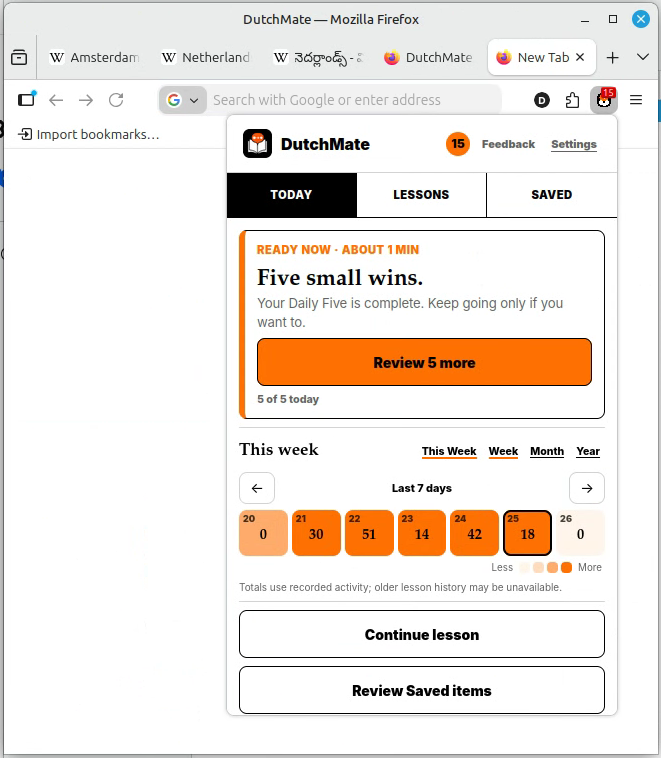

Translate in place
Read Dutch, English, or Telugu on real websites without leaving the page.
Build 0.5.1 · Edge listing now live
Understand Dutch in context with English and Telugu (తెలుగు) beside you. Save useful words, then practise grammar, verb conjugations, and sentences with Daily Five, Lessons, and Verb Journeys.
Read Dutch, English, or Telugu on real websites without leaving the page.
Save useful vocabulary and return to it with small, local practice.

From the page you are reading to the words you keep and practise, these Firefox screenshots show the core reading flow.
Read Dutch in context. Understand more. Keep the words that matter.
Keep Dutch as your learning language, with English and Telugu beside it when you need help.
Look up Dutch, English, or Telugu words and selected text on the websites you already visit.
Keep useful vocabulary locally and return to it with Daily Five practice and short lessons.
Move from a useful word to the grammar, conjugation, sentence, and vocabulary practice behind it.
Work through useful patterns with short exercises and clear feedback.
See Dutch forms with English comparisons, examples, and a clear path.
Reorder and transform words until the pattern feels familiar.
Save words from real pages and bring them back with Daily Five and Lessons.
You choose what to translate and save. Your learning record stays in your browser, with no account required.
You choose the text DutchMate translates.
Saved words and learning progress stay in your browser.
Install from Chrome, Firefox, or Edge and start building your own Dutch vocabulary.
Chrome, Firefox, and Edge listings are live.
Send private feedback, leave a public review, or share it on X.
Private
Open the feedback form if you want to send comments without posting publicly.
Review DutchMate on Chrome, Firefox Add-ons, or Edge Add-ons to help other learners find it.
Share DutchMate on X with the homepage link.
Follow @dutchmate_addon for product updates and new ways to learn Dutch from the web.
Use the private feedback form for questions, ideas, or bug reports.
{kind=link}
{kind=link}
{kind=link}
{kind=link}
{kind=link}
{kind=link}
{kind=link}
{kind=link}
{kind=link}
{kind=link}
{kind=link}
{kind=link}
{kind=link}
{kind=link}